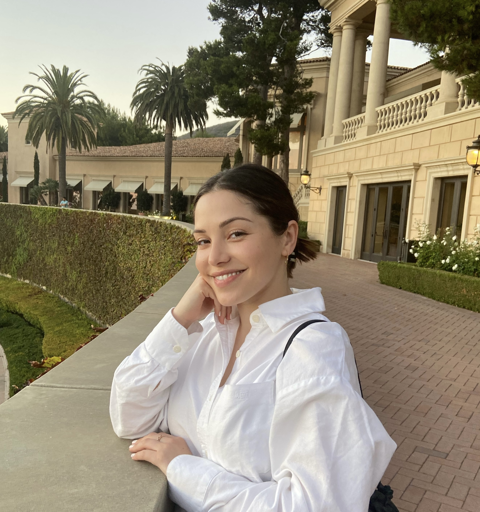

Sophie Homer is a multidisciplinary creative. She's always had a keen eye for clean, functional, design. Her creative appetite is fueled by believing good design begins with accessibility. Sophie was born and raised in Los Angeles,
California. She worked in costumes for television and film for nearly ten years before pursing her dreams in web development. She lives in Los Angeles.